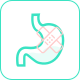

{{inspectDate}}
{{totalScore}}
总分
建议您7日后再次检测
说明
亲爱的{{userName}}{{sexStr}}你好！
-
{{item.targetThirdName}}
正常
轻度风险
中度风险
-
血氧饱和度
{{bloodOxygen.bloodStatus}}
{{bloodOxygen.bloodScore}}%
正常范围94%-99%
肺功能明显降低的人群，易患以下疾病：
新型冠状病毒肺炎
肺癌
慢性阻塞性肺疾病（COPD）
慢性间质性肺炎
尘肺病
原因不明的肺部疾病（肺结节）
出门戴口罩，预防病毒，防雾霾，严格控烟。
适当进行有氧运动，提升肺活量，改善呼吸功能。
多吃清肺的食物，不吃辛辣油腻等刺激性食物。
先天免疫力 | 后天免疫力
免疫力较低，常出现以下症状：
经常感冒

身体疲惫

愈合能力差

肠胃娇弱

口腔溃疡

频发感染
免疫力异常的人群易患这些疾病：
上呼吸道感染
急慢性胃炎
肠易激综合征
急慢性肠炎
非典型肺炎
肺炎
结肠过敏症
肿瘤
新型冠状病毒肺炎
本次评估以下指标与您的免疫力有关系
营养、心态、睡眠是免疫力的后援支撑！
甲亢 | 甲减
分泌过高：甲亢症状表现

心慌

食欲亢进

性情急躁
消瘦
分泌过低：甲减症状表现

记忆下降

精神萎靡

体重增加
怕冷
什么是甲状腺？ 查看解释
甲状腺分泌功能异常的人群易患这些疾病：
甲状腺炎
甲状腺肿
甲状腺结节
甲状腺癌
甲状腺瘤
甲状腺机能亢进（俗称甲亢）
甲状腺功能减退（俗称甲减）
以下是您身体十大系统的评估结果：
肤质肤龄肤色
{{inspectSkinView.skinTypeResult}}{{inspectSkinView.age}}{{skinColor[inspectSkinView.color]}}
原图
重点关注
({{inspectSkinView.majorList.length}}项)
有待改善
({{inspectSkinView.awaitList.length}}项)
继续保持
({{inspectSkinView.continueList.length}}项)
以下是您身体存在亚健康风险的指标：

生理年龄
实际年龄生理年龄年龄差
您的生理年龄低于实际年龄，身体年轻态，请继续保持哦！
您的生理年龄高于实际年龄，请注意管理健康哦！
您的生理年龄与实际年龄相当，请继续努力，力争变的更年轻哦！
各系统生理年龄如下：
以下是您六大身体实时状态的情况：
{{state.targetThirdName}}
风险度
-
{{item.diseaseName}}
{{item.store}}%查看
专属
建议
健康
食谱
欢迎您查看健康报告使用帮助！
1、综合评估：康浩云健康评估针对您的整体健康状况给予综合评估得分，分值代表了整体的健康情况，分值越高说明您的身体越好、分值较低时说明您处于亚健康状态；
2、十大系统：康浩云健康评估针对人体10大系统进行评估，分值越高说明您的身体越好，分值越低则反之说明您处于相对比较严重的亚健康状态；
3、健康指标：康浩云健康评估给予10大系统下的健康指标进行评估，评估得分越高分值越高说明您的身体越好、分值较低则反之。康浩云健康评估将根据您的详细指标评估结果给予专属的健康改善建议，基于膳食、营养素、运动和生活方式，请您按照建议积极改善生活习惯、调整饮食结构、合理增加运动锻炼（具体详见报告建议）。健康建议将有助于改善您的亚健康状态、全面提升您的身体素质。
4、实时状态：康浩云健康评估针对您的实时状态给予评估，共计有6项状态评估，有助于您及时了解自己的身体状态。
二、关于报告中提示的问题？
本报告主要起预警作用，对检测出来您已知的慢性健康问题，继续加以重视；对检测出来提示预警或原来您不知道的健康问题，可能仅是⼀种早期症状，应引起重视，但不必紧张，或者去医院做进⼀步检查。或因本次所筛查范围所限未能发现到的情况，仍按原诊断及治疗。
三、关于您的专属健康改善建议？
报告中推送的内容，包含膳食建议、运动建议、健康食谱、营养素建议、调养方法等均作为个人健康管理所需的参考，不作为处方，用户可根据自身情况进行合理搭配选择，旨在希望您通过健康饮食及合理的生活方式提升或改善您的健康状况。
康浩公司 版权所有
Copyright © 2020-2021 Kang Hao.All Rights Reserved.
1、综合评估：京智康康浩云健康评估针对您的整体健康状况给予综合评估得分，分值代表了整体的健康情况，分值越高说明您的身体越好、分值较低时说明您处于亚健康状态；
2、十大系统：京智康康浩云健康评估针对人体10大系统进行评估，分值越高说明您的身体越好，分值越低则反之说明您处于相对比较严重的亚健康状态；
3、健康指标：京智康康浩云健康评估给予10大系统下的健康指标进行评估，评估得分越高分值越高说明您的身体越好、分值较低则反之。京智康康浩云健康评估将根据您的详细指标评估结果给予专属的健康改善建议，基于膳食、营养素、运动和生活方式，请您按照建议积极改善生活习惯、调整饮食结构、合理增加运动锻炼（具体详见报告建议）。健康建议将有助于改善您的亚健康状态、全面提升您的身体素质。
4、实时状态：京智康康浩云健康评估针对您的实时状态给予评估，共计有6项状态评估，有助于您及时了解自己的身体状态。
二、关于报告中提示的问题？
本报告主要起预警作用，对检测出来您已知的慢性健康问题，继续加以重视；对检测出来提示预警或原来您不知道的健康问题，可能仅是⼀种早期症状，应引起重视，但不必紧张，或者去医院做进⼀步检查。或因本次所筛查范围所限未能发现到的情况，仍按原诊断及治疗。
三、关于您的专属健康改善建议？
报告中推送的内容，包含膳食建议、运动建议、健康食谱、营养素建议、调养方法等均作为个人健康管理所需的参考，不作为处方，用户可根据自身情况进行合理搭配选择，旨在希望您通过健康饮食及合理的生活方式提升或改善您的健康状况。
用户须知
欢迎您使用康浩云健康评估服务，本人已经阅读康浩云健康评估服务条款并同意本声明。
1. 康浩云健康评估是针对亚健康人群进行数据采集设备，并非医疗器械设备，康浩云健康评估所有资料及数据报告仅供参考使用，不作为个人健康状况的医疗目的衡量标准，也不能替代医生和其他医务人员的专业建议。
2. 康浩云健康评估是为亚健康人群设计，以中医数字化技术、脉搏波检测技术、生物电阻抗检测技术为基础，经过科学及实践测算出来，并非特别针对残缺人士及疾病患者，此类人群使用可能会出现个别指标测量不精准。
3. 任何情况下，康浩云健康评估所提供数据仅为提升用户体验所用，用户对于其自身健康状况的最终评估仅来自于专业医疗机构的检测手段，康浩云健康评估对于采集数据不做任何形式的保证，不保证所提供数据满足用户的要求，对采集结果的安全性、正确性、及时性均不做担保。故本公司不对因使用本品提供的数据而导致之损失或损害承担任何直接或间接责任。
4. 本报告主要起预警作用，对检测出来也知道的慢性健康问题，继续加以重视；对检测出来提示预警或原来不知道的健康问题，可能仅是⼀种早期症状，应引起重视，但不必紧张，或者去医院做进⼀步检查。或因本次所查范围所限未能发现到的情况，仍按原诊断及治疗。本次健康分析报告仅根据本次所查范围所做，可能难以全⾯反映您的健康状况。如有不适症状出现请到相应医院专科就诊。
5. 健康分析报告说明：⽬的实现⾃我预防保健。世界卫⽣组织研究报告表明，1/3的疾病是可以通过预防保健避免的，1/3的疾病可以通过信息的有效沟通来提⾼治疗的效果。要从疾病管理为主转向预防保健和⾃我保健为主，康浩云健康评估通过移动互联和康浩云健康系统为用户提供⽐较全⾯、系统的健康分析，从⽽有重点地进⾏⾃我预防、有重点地去医疗机构检查。
6. 康浩云健康评估评估报告推送的内容，含膳食建议、营养建议、运动建议、健康食谱、调养方法等均作为个人健康管理所需的参考，不作为处方。本公司不对通过康浩云健康评估在其信息平台提供的相关产品或服务做任何担保。
7. 康浩云健康评估是基于假定用户正常情况下进行的数据采集，采集结果每时每刻都在发生变化，所以建议每天测量选择固定时间点，最好是空腹平静心态下测量会更有效。用户通过康浩云健康评估获取材料或数据由您自己承担风险，同时您将对使用此类材料或数据而导致的人身或财产损失承担全部责任。
8. 本公司重视对用户隐私的保护，保护隐私是本公司的一项基本政策。您提供的登记资料及本公司保留的有关您的若干其他个人资料将受到中国有关隐私的法律法规的保护。
9. 本公司有权在必要时修改服务条款，服务条款一旦发生变动，将会在相关页面上公布修改后的服务条款。如果不同意所改动的内容，用户应主动取消此项服务。如果用户继续使用服务，则视为接受服务条款的变动。
10. 凡以任何方式登录康浩云健康评估，或对您使用康浩云健康评估、网络平台、与本公司相关的任何内容、服务均视为自愿接受康浩云健康评估声明的约束。无论在任何原因下（包括但不限于疏忽原因），对您或任何人通过使用康浩云健康评估所导致的损失或损害（包括直接、间接的损失或损害），责任均由使用者自行承担（除非该等损失系由本公司产品质量不达标所致）。
康浩公司 版权所有
Copyright 2020-2021 Kang Hao.All Rights Reserved.


亲，请联系您的保险业务员查看报告